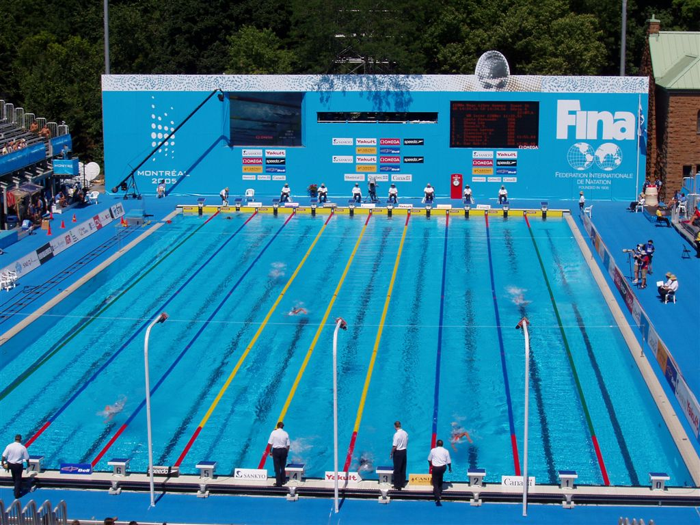
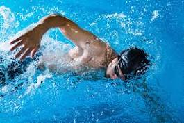
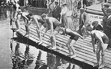

1. Pengertian Olarahga Renang

Renang adalah olahraga di mana seseorang bergerak di dalam air dengan menggunakan gerakan tangan dan kaki. Tujuannya bisa untuk bersenang-senang, berolahraga, atau berkompetisi. Renang melibatkan teknik pernapasan dan gerakan tubuh yang dapat dilakukan di kolam renang atau perairan terbuka.
2. Jenis - Jenis Gaya Olarahga Renang

Berikut ini ialah jenis-jenis dari gaya renang
1. Renang Gaya Dada (Breast Stroke)
Renang gaya dada adalah gaya renang yang paling umum dan mudah dipelajari.
Saat berenang gaya dada, kita bergerak maju dengan mengayuh tangan dan kaki secara bersamaan. Gerakan seperti memeluk udara dengan tangan dan melakukan tendangan dada dengan kaki.
Pernapasan dilakukan dengan mengangkat kepala di atas air. Gaya dada cocok untuk pemula karena gerakannya relatif mudah dipahami. Meskipun tergolong lambat dibanding gaya renang lainnya,
gaya dada memberikan stabilitas dan kenyamanan bagi para renangawan, sehingga sering menjadi pilihan untuk bersantai atau berenang rekreasi.
2. Renang Gaya Punggung (Back Stroke)
Renang gaya pungung adalah cara berenang di mana tubuh berada dalam posisi terlentang di atas air. Saat berenang gaya pungung, kita menggunakan gerakan tangan seperti mengayuh dan melakukan tendangan kaki ke belakang.
Posisi tubuh terbuka membuat pernapasan lebih mudah, karena wajah selalu di atas permukaan air. Renang gaya pungung sering disukai karena memberikan rasa nyaman dan tidak membebani leher. Para perenang bisa dengan mudah mengamati sekitar mereka saat berenang.
Meskipun tidak secepat beberapa gaya lainnya, gaya pungung sangat populer dalam olahraga renang dan sering digunakan untuk bersantai di kolam renang.
3. Renang Gaya Kupu-kupu (Butterfly)
Renang gaya kupu-kupu adalah gaya yang penuh tantangan dan indah, di mana perenang mengayuh kedua tangan dan kaki secara bersamaan. Gerakan ini menyerupai sayap kupu-kupu yang terbuka dan tertutup. Pada saat yang bersamaan, kepala berada di dalam air dan dikeluarkan saat perlu bernapas.
Gaya kupu-kupu memerlukan kekuatan dan koordinasi yang baik karena gerakan lengan dan kaki yang kompleks. Meskipun teknis, gaya ini memberikan kecepatan maksimal di antara gaya renang lainnya. Renang gaya kupu-kupu menantang, namun memberikan kepuasan dan keindahan tersendiri saat dikuasai dengan baik oleh perenang.
3. Sejarah Olarahga Renang

Renang memiliki sejarah panjang yang melibatkan evolusi dari aktivitas harian menjadi olahraga terorganisir. Di zaman prasejarah, manusia mungkin secara alami belajar berenang untuk bertahan hidup. Pada abad ke-19, olahraga renang terorganisir mulai berkembang di Inggris dan Amerika Serikat. Pada 1837, terbentuklah The National Swimming Society di London, menjadi organisasi renang pertama di dunia. Renang juga menjadi bagian dari Olimpiade modern pertama di Athena pada tahun 1896. Selama Perang Dunia II, renang menjadi bagian penting dari pelatihan militer, meningkatkan popularitasnya. Pada tingkat internasional, Federasi Renang Internasional (FINA) didirikan pada tahun 1908 untuk mengatur olahraga ini. Renang terus berkembang setelah perang, dengan berbagai gaya seperti gaya dada, punggung, dan kupu-kupu menjadi bagian dari kompetisi. Pertumbuhan fasilitas kolam renang modern dan peningkatan peralatan telah mendorong popularitas renang di seluruh dunia. Atlet seperti Michael Phelps dan Katie Ledecky telah memberikan inspirasi bagi generasi baru peselancar air. Dengan manfaat kesehatan dan perkembangan teknis yang ditawarkannya, renang tetap menjadi olahraga yang dicintai dan dihargai oleh banyak orang.